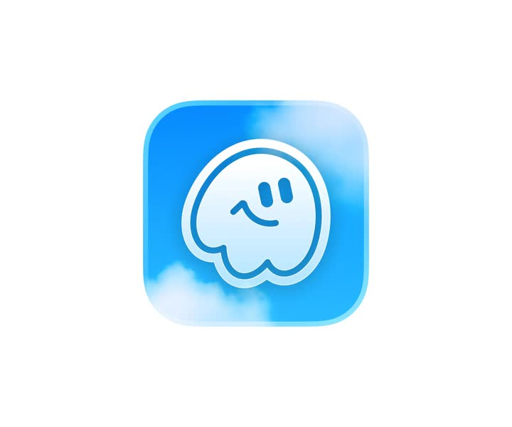
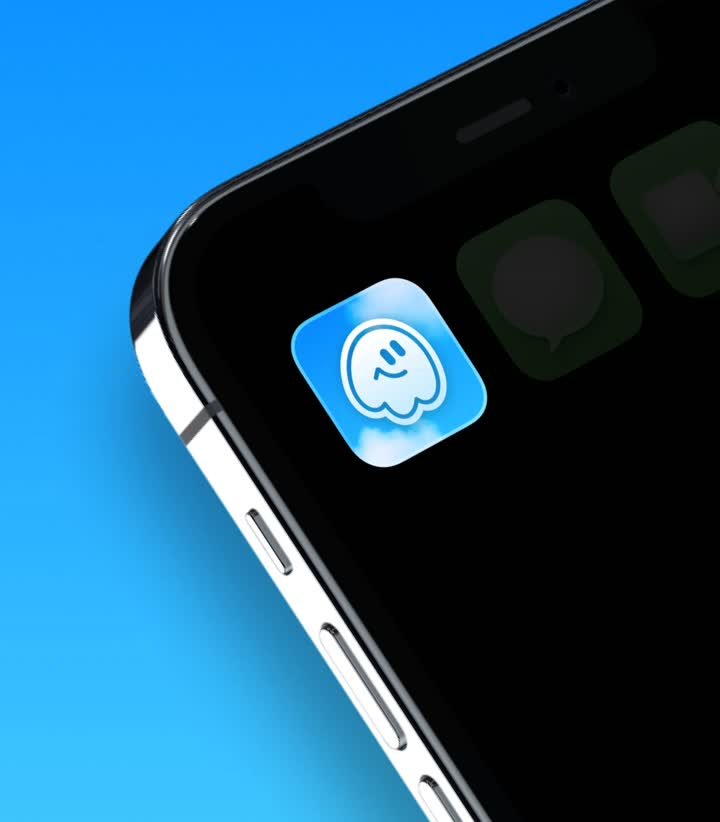

App icon: a single polished iOS app-icon render - a sky-blue gradient squircle with soft cloud wisps drifting inside, and a friendly ghost mascot drawn as a white/blue outline (two oval eyes, small smile, wavy bottom edge) with a subtle inner glow; presented on white.
Media
Frame-by-frame


0-100%
Static render (plus a second close-up/variant): 180px squircle, vertical blue gradient (#38BDF8 top -> #2563EB bottom), translucent cloud shapes at the corners, ghost outline centered with 6px stroke, gentle top light.
Build prompt
Rebuild this static render 1:1, pixel-faithful: an iOS app icon - a sky-blue gradient squircle with soft cloud wisps drifting inside, and a friendly ghost mascot drawn as a white/blue outline (two oval eyes, small smile, wavy bottom edge) with a subtle inner glow; presented on white, plus a second close-up variant.
## Stack
React + TypeScript + Tailwind (or pure SVG). Layered gradients + blurred shapes. Static brand asset.
## Scene
180px squircle: vertical blue gradient (#38BDF8 top -> #2563EB bottom); translucent cloud shapes at the corners (soft, blurred, white/40); ghost outline centered - 6px stroke, two oval eyes, small smile, wavy bottom edge, subtle inner glow; gentle top light across the squircle. Presented on a clean white field.
## Motion spec
None - static render.
## Calibration
- The ghost is an outline drawing (6px stroke), not a filled shape - that restraint is the friendliness.
- Cloud wisps live at the corners and stay translucent; they must never touch the ghost.
- Top light is a soft vertical gradient overlay, consistent with the base gradient direction.
## Reduced motion
N/A - static render.
## Don't miss
- iOS squircle geometry, not a rounded rect - use the continuous-corner mask.
- The wavy bottom edge is the ghost's character; a flat bottom reads as a blob.
- Inner glow on the ghost stroke is subtle (white/30 blur) - a halo, not a neon sign.